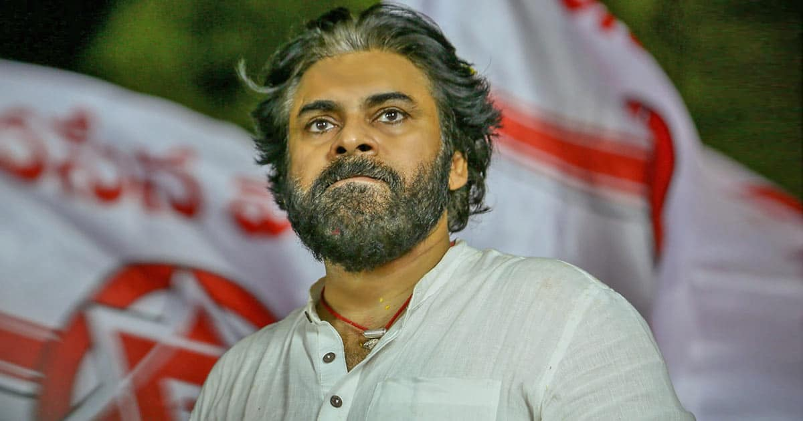

Pawan Kalyan, whose real name is Konidela Kalyan Babu, is an Indian actor, politician, and film producer. He was born on September 2, 1971, in Bapatla, Andhra Pradesh, India. He is a prominent figure in the Telugu film industry, often referred to as Tollywood. Pawan Kalyan is the younger brother of renowned Telugu actor Chiranjeevi (Konidela Siva Sankara Vara Prasad), and he is also known for founding the Jana Sena Party, a regional political party in Andhra Pradesh and Telangana. His entry into politics was seen as an effort to bring about change and address various issues in the region. In his film career, Pawan Kalyan has acted in numerous Telugu movies and has garnered a massive fan following. Some of his notable films include "Tholi Prema," "Gabbar Singh," "Attarintiki Daredi," and "Jalsa," among others. His acting style, dialogue delivery, and charismatic presence on-screen have contributed to his popularity. As a politician, Pawan Kalyan has expressed his views on various social and political issues in the state of Andhra Pradesh and Telangana. He has been vocal about matters like farmers' rights, special status for Andhra Pradesh, and concerns related to public welfare. Please note that my knowledge cutoff date is in September 2021, and there may have been developments in Pawan Kalyan's career or political activities since then.
For inquiries and bookings, contact: info@pawankalyanfans.com